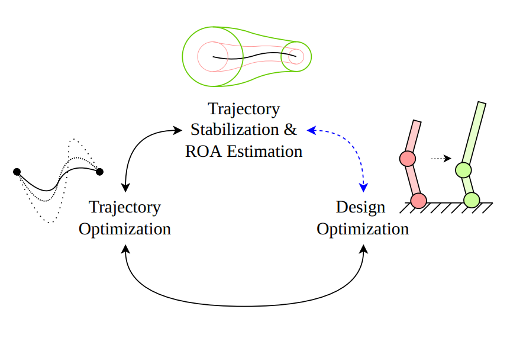
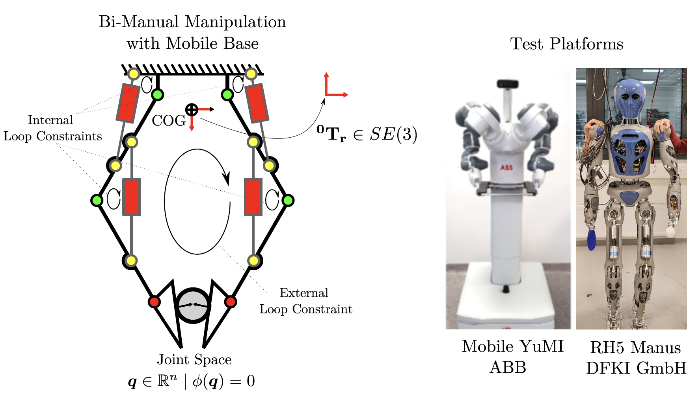
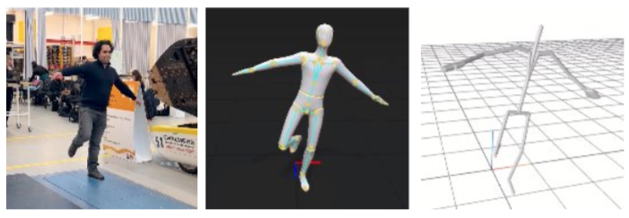
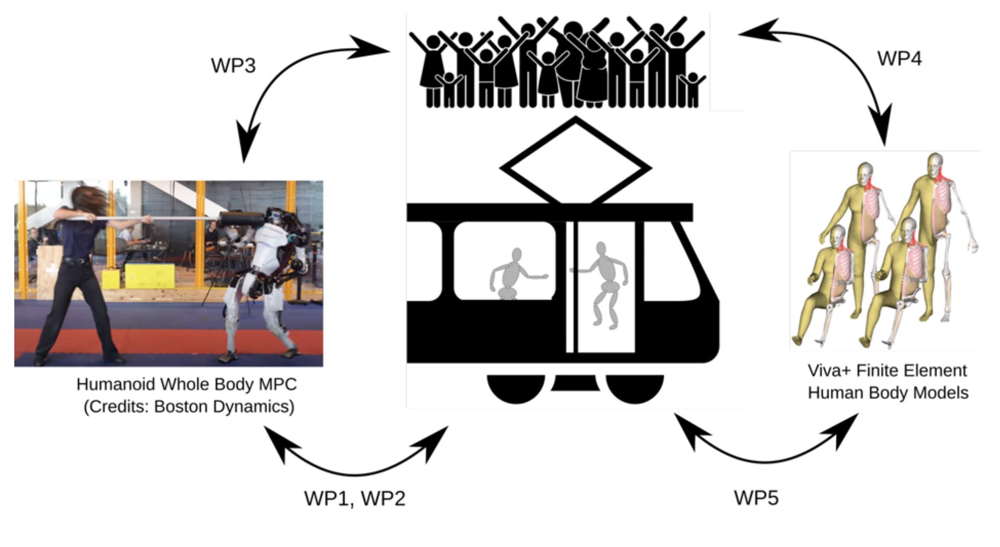
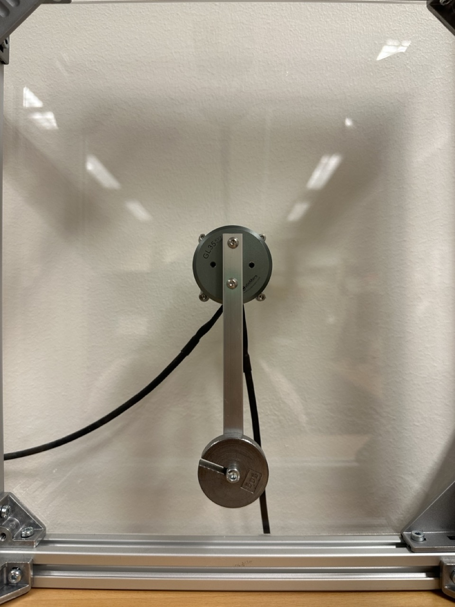
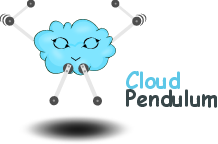
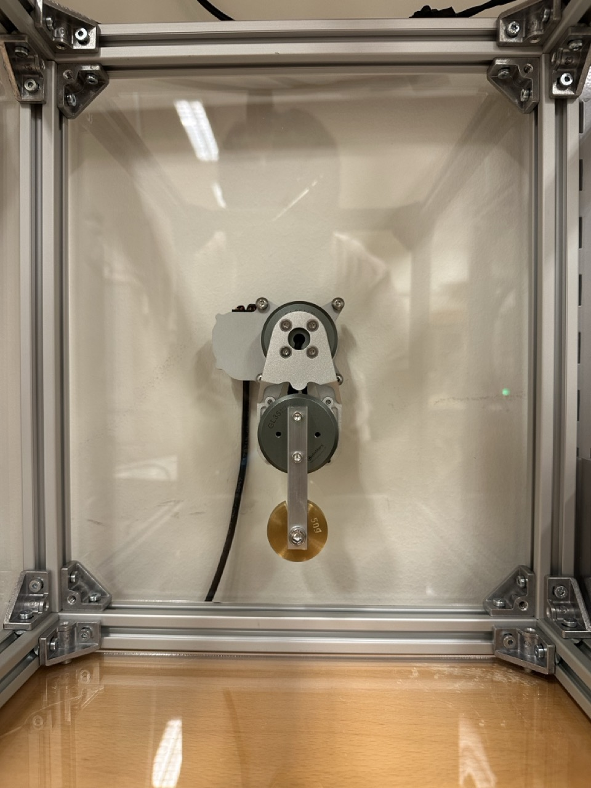

RAIL Lab
Ongoing and recent funded projects at RAIL. For full details see the Chalmers Research Portal.
This project develops an interactive generative framework for collaborative robot design. Using natural language interaction, the framework proposes legged robots tailored to specific applications by integrating robot design, motion planning, and control engineering with formal stability guarantees. Target applications span hospitality, healthcare, search-and-rescue, and planetary exploration.
A core scientific challenge is the simultaneous co-optimisation of mechanical design, motion trajectories, and closed-loop controllers — producing robots that are provably robust to hardware imperfections and model uncertainty from the design stage.

This project develops an AI-driven framework for optimal control with constraints for bi-manual loco-manipulation using humanoid mobile robots. The framework handles hundreds of geometric constraints arising from both external manipulation tasks and internal closed-loop robot designs.
Key contributions include kinodynamic motion planning and stabilising control for mobile bases, and learning from demonstration to automatically identify task constraints. The framework is evaluated on Mobile YuMi and RH5 Manus platforms for assembly applications.

A workflow for extracting anthropometric information from photographs to create individualized digital twins for injury assessment across diverse populations — including women, obese individuals, and elderly — who are underrepresented in standard crash test dummies.
The pipeline combines deep learning for anthropometric parameter recognition, convex geometric optimisation for mass distribution estimation, and multibody dynamics to generate digital twins with accurate anatomical landmarks and inertial properties.

This project addresses the safety of standing passengers in public transit vehicles who are subject to unexpected disturbances such as sudden acceleration, braking, or road irregularities. Using reinforcement learning and model predictive control, we develop a parameterised human model that simulates balance and step-recovery responses across different age groups, physical characteristics, and muscle capabilities.
Outcomes target improved design of autonomous vehicle systems, optimised transportation infrastructure planning, and development of rehabilitation aids such as exoskeletons for elderly and disabled passengers.

A digital platform for programming coursework that provides immediate feedback to students, integrating multibody dynamics simulations and live hardware video streams of pendulum systems in cloud environments. Supports courses in programming, AI, dynamics, robotics, and control, with semi-automated grading for instructors.
Delivered the CloudPendulum ecosystem at RAIL, making physical experiment infrastructure accessible to students and researchers worldwide.


A robot-as-a-service (RaaS) double pendulum functioning as both Acrobot and Pendubot platforms, cloud-connected for remote access by students, researchers, and industry. Users can test optimal control and reinforcement learning algorithms remotely on physical hardware — bridging simulation and real-world deployment.
